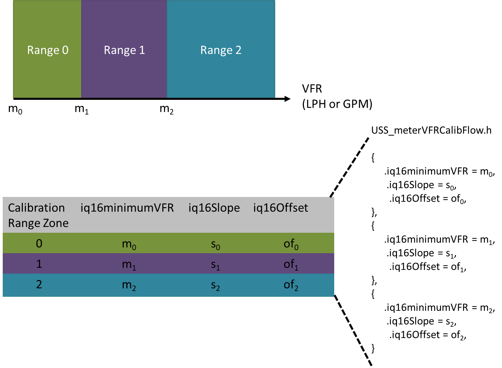

Volume Flow Rate Flow Calibration¶
Volume Flow Rate (VFR) Flow calibration functionality in the library is enabled by providing Meter VFR calibration data via the USS_config\USS_meterVFRCalibFlow.h file. For more details regarding recommended procedure to obtain Volume Flow Rate calibration data please refer to the Ultrasonic Design Center Quick Start Guide.
The image below shows which slope and offset will be applied to each calibration zone. If iq16minimumVFR (minimum VFR for corresponding range) falls outside the calibrated regions, the library will use the range 0’s meter constants.

Fig. 9 MC_VFR_Calibration_Concept
Enabling VFR Flow calibration on USS SW Library configuration file 2_30 and later¶
- In
USS_Config\USS_userConfig.h- Set
#define USS_ALG_VFR_CALIB_MODE USS_ALG_VFR_CALIB_OPTION_FLOW
- Set
- In
USS_Config\USS_meterVFRCalibFlow.h- Define USS_VFR_METER_CALIB_RANGES
- Min: 1
- Max: 16
- Define USS_VFR_METER_CALIB_DATA
- iq16minimumVFR must be sorted from lowest to highest value
- Number of entries for USS_VFR_METER_CALIB_DATA must match USS_VFR_METER_CALIB_RANGES
- Define USS_VFR_METER_CALIB_RANGES
Enabling VFR Flow calibration on USS SW Library configuration file earlier than 2_30¶
- Replace your projects
USS\_Config\USS\_userConfig.cwith the<USS_SW_LIB_2_30_xx_xx_INSTALL_DIR>\examples\USSSWLib_template_example\USS_Config\USS_userConfig.c - In your
USS_Config\USS_userConfig.h- Define under “LIBRARY METER CONFIGURATION” section
#define USS_ALG_VFR_CALIB_MODE USS_ALG_VFR_CALIB_OPTION_FLOW
- Define under “LIBRARY METER CONFIGURATION” section
- Copy
<USS_SW_LIB_2_30_xx_xx_INSTALL_DIR>\examples\USSSWLib_template_example\USS_Config\USS_meterVFRCalibFlow.hin your project USS_Config directory.